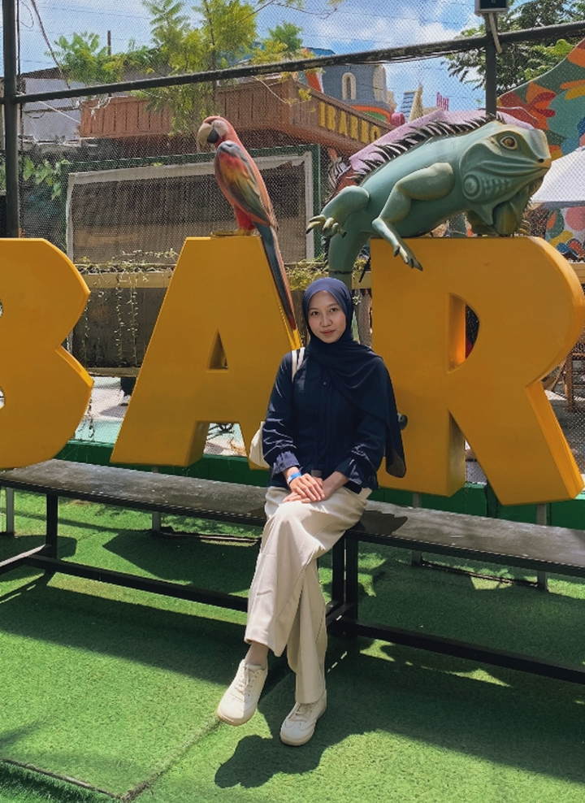
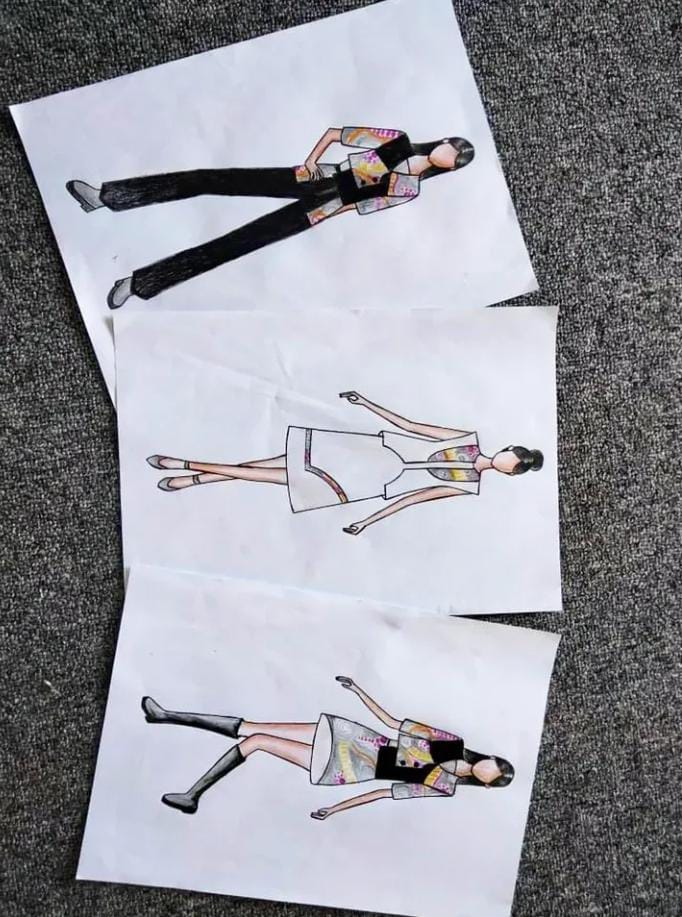
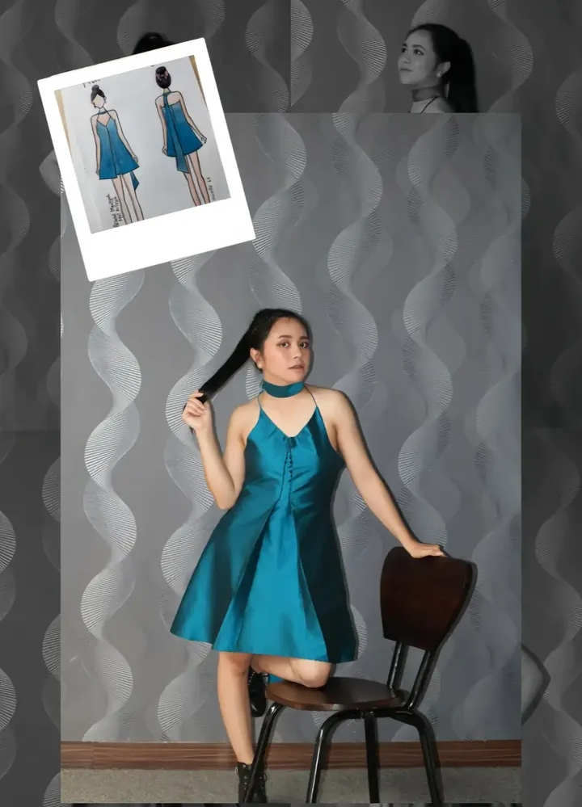
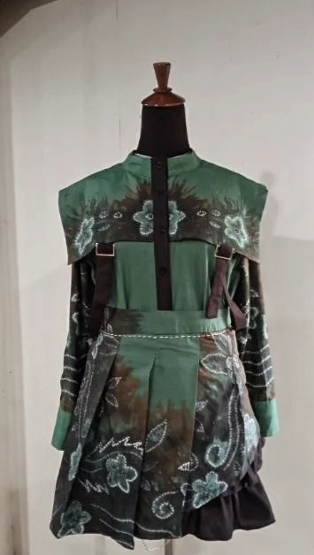

HELLO, NICE TO MEET YOU!
The Art of
Being Laila.
Dari sketsa menjadi karya, dari imajinasi menjadi nyata.
Kenali Saya ↗CREATIVE MIND · FASHION ENTHUSIAST

Behind the Creativity.
Halo, saya Lailatul Mauliyah. Biasa dipanggil Laila.
Saya adalah seseorang yang memiliki ketertarikan pada dunia fashion, khususnya desain pakaian dan menjahit busana wanita. Saya senang menuangkan ide dan imajinasi ke dalam desain, memadukan warna dan bahan untuk menciptakan tampilan yang menarik.
Bagi saya, menjahit bukan hanya tentang menyatukan potongan kain menjadi pakaian, tetapi juga tentang proses mewujudkan sebuah ide menjadi karya nyta.
Saya juga senang mencoba hal-hal baru, mencari inspirasi, dan mengembangkan kreativitas melalui berbagai pengalaman.
Creative
Senang menciptakan ide dan hal baru.
Curious
Selalu ingin belajar dan mengeksplorasi.
Passionate
Memiliki ketertarikan besar pada fashion.
Education & Journey.
CURRENTLY STUDYING
Universitas Amikom Purwokerto
Program Studi Bisnis Digital
My Creative Side.
01 / KREATIVITAS
Menggambar Desain Busana
Menuangkan imajinasi menjadi ide dan sketsa desain pakaian,mengeksplorasi model, warna, serta detail busana.02 / KETERAMPILAN
Menjahit Pakaian Wanita
Mewujudkan ide desain menjadi pakaian melalui keterampilan menjahit dan kreativitas dalam mengolah kain.My Little Gallery.
Beberapa inspirasi, ide, dan karya yang menjadi bagian dari perjalanan kreatif saya.

01 — Fashion Sketch

02 — Design Inspiration

03 — Sewing Project
From Imagination
to Fashion Creation.
Saya ingin terus mengembangkan kemampuan dan kreativitas dalam dunia fashion, serta mewujudkan impian menjadi seorang fashion designer yang mampu menciptakan karya dengan karakter dan cerita tersendiri.
Let's Create Something.
Terima kasih sudah berkunjung dan mengenal sedikit tentang saya. Mari terhubung dan berbagi inspirasi!
Instagram: @lailamlyh ↗